Phase 1 of docs/35 (the reader). LEFT of each pair: Chromium screenshots of the
real npm package from the committed capture runs
(extract/computed/out/<lib>/<component>/orig-shots/ — the same runs that produced the
captured-truth ledgers the fixture-drift gate reads). RIGHT: a read-only PNG export of the
latest minted Figma v3 page (checkbox 198:77718, textarea 198:77456, Scratch file
byMp6lt0Ij9b2QbkDGFwBh — no Figma writes were made). Per-fact agreement is the machine's job:
see recipe/fixture-reader/out/DRIFT-REPORT.md. This sheet exists so owner review is
compare-two-images, not re-derive-from-source. No grade is minted here; overallSuccess stays false.
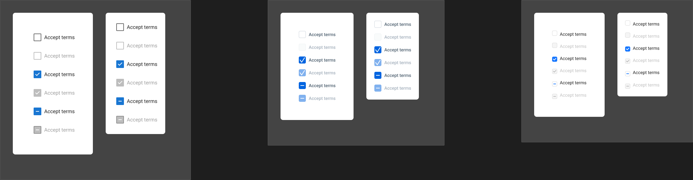
Reader: 26 match · 19 drift (all carried: theme-mount divergence — the fixture transcribed the unthemed astryx.css fallbacks; the documented Theme mount renders #262626/#d4d4d4/#737373/Figtree) · 10 receipts.
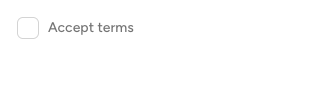
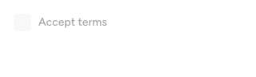
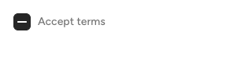
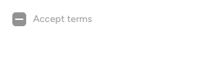
Reader: 24 match · 0 drift · 31 receipts (no label mounted; icon-anatomy lowerings named). The even-odd tick path verifies structurally against the ledger.
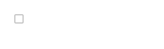
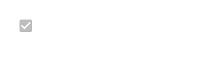
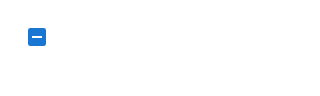
Reader: 42 match · 1 drift (the 8×2-dash-vs-8×8-square lowering, carried by name) · 12 receipts. The baked-45° check geometry verifies mechanically from the ::after legs.
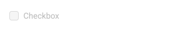
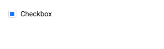
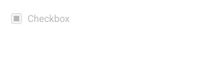
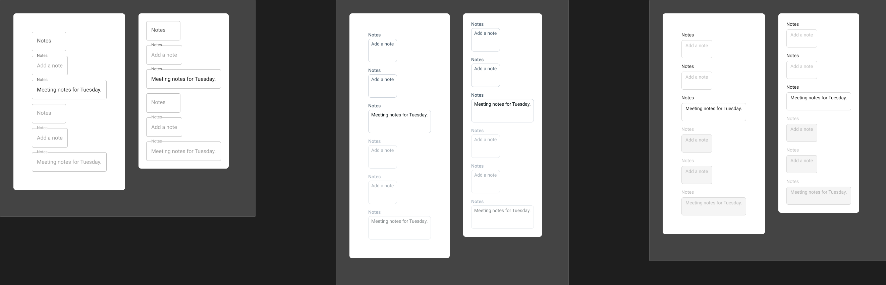
Reader: 19 match · 15 drift (all carried: the same theme-mount divergence) · 5 receipts.
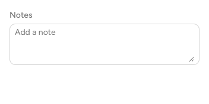
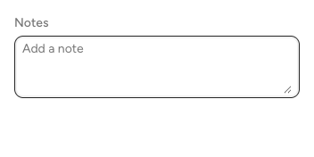
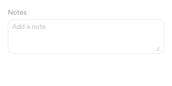
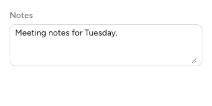
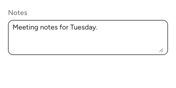
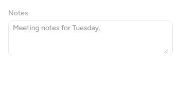
Reader: 36 match · 0 drift · 3 receipts. Rest-empty hides the placeholder (::placeholder opacity 0 at rest — read at focus); the Content=value shrink plane (−9px, ×0.75) verifies from the label transform.
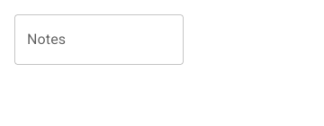
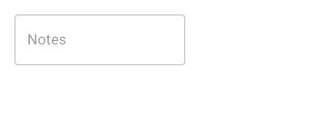
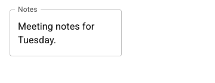
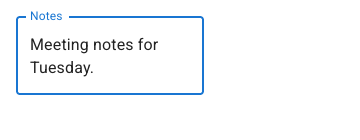
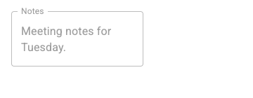
Reader: 25 match · 0 drift · 14 receipts (no label part; font family is the capture's Roboto mount pin, receipted).
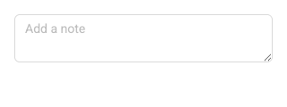
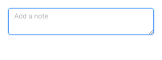
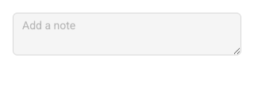
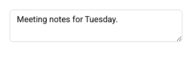
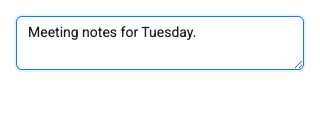
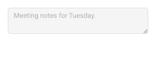